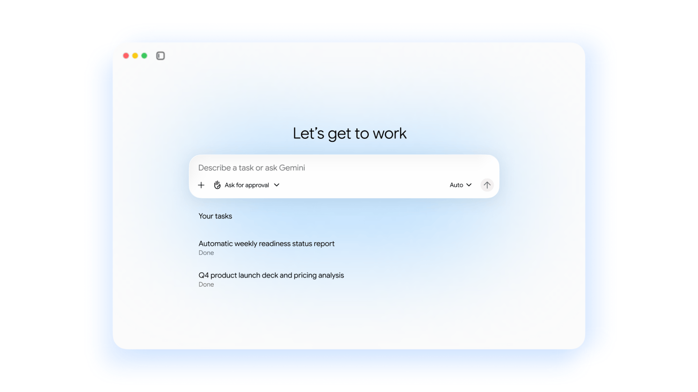

Gemini agent — единый универсальный агент для работы: отвечает на вопросы, ведёт рутинные рабочие задачи, создаёт изображения и медиа, пишет и запускает код — всё из одного окна ввода запроса и через один API. Логика смены простая: агенту дают не пошаговые инструкции, а желаемый результат — «вы делегируете результат и возвращаетесь к готовой работе», как сформулировал в keynote CEO Google Cloud Томас Куриан. Агент работает внутри Gmail, Drive, Docs, Slides, Sheets, Chat и Calendar, доступен с веба, iOS, Android, Windows и Mac, а также из командной строки, Microsoft 365 и Slack; может работать и «безликим» агентом, встраиваясь в сторонние приложения.
Ключевая особенность — устойчивое выполнение: агент живёт в облаке с единым набором памяти, контекста и персонализации, поэтому задача, рассчитанная на часы или дни, продолжает выполняться, когда вы закрыли ноутбук. Для многошаговых задач Gemini динамически собирает отряд субагентов — временных, каждый со своей идентичностью. Отдельная ставка на «агентов-коллег» (coworker agents): они работают от имени команды или роли, получают постоянную роль, собственную почту вида @agents.company.com и выделенное хранилище, и видят только тот контекст, который им дали вы или коллеги.
Google приводит и масштаб внедрения: за последний год почти 500 клиентов Google Cloud обработали каждый более триллиона токенов, около 80% всех клиентов облака уже используют ИИ-продукты, а почти 90% компаний из Fortune 100 — Gemini Enterprise. Для «взрослой» эксплуатации заявлены отраслевые сборки (для финансовых и юридических команд), новые навыки аналитики данных на обычном языке, а также контроль затрат: мультимодельная оркестрация, Smart Routing и лимиты расходов в реальном времени. Безопасность и управление — идентичность агентов, политики, авторизация, изолированные песочницы и сетевые шлюзы.
Начинается rollout с бизнеса — как и полагается продукту, который целится в корпоративные бюджеты, где главные конкуренты Google — OpenAI и Microsoft со своими агентскими платформами. Судя по анонсам клиентов в тот же день (от юридических агентств до управляющих фондов), Google делает ставку на то, что «агент с должностью и почтовым ящиком» окажется продаваемее очередного чат-бота.